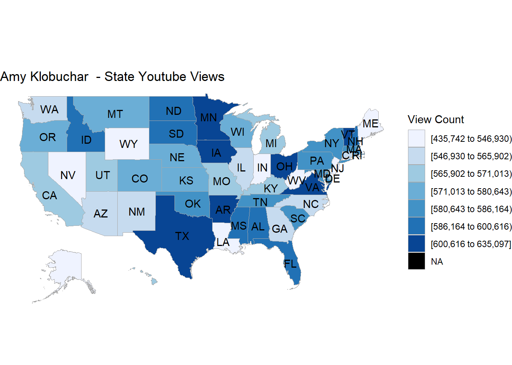
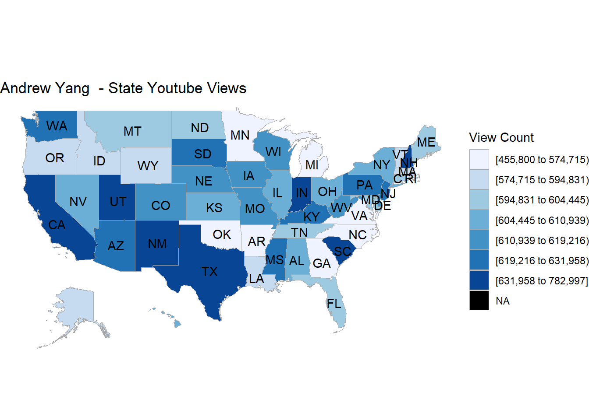
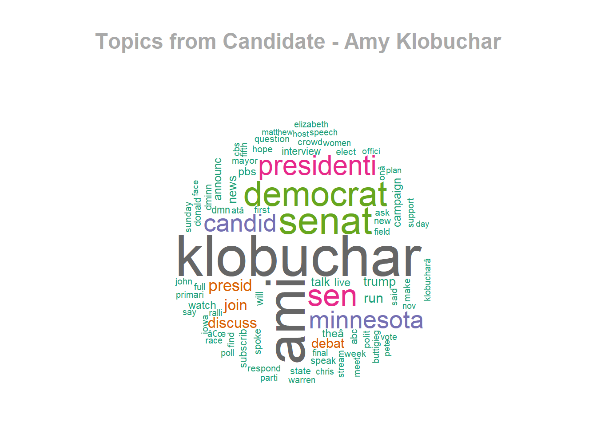
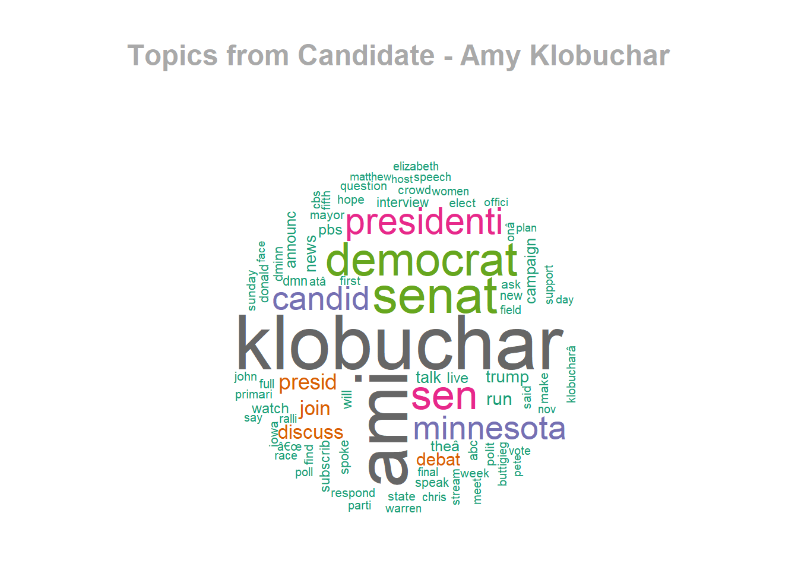
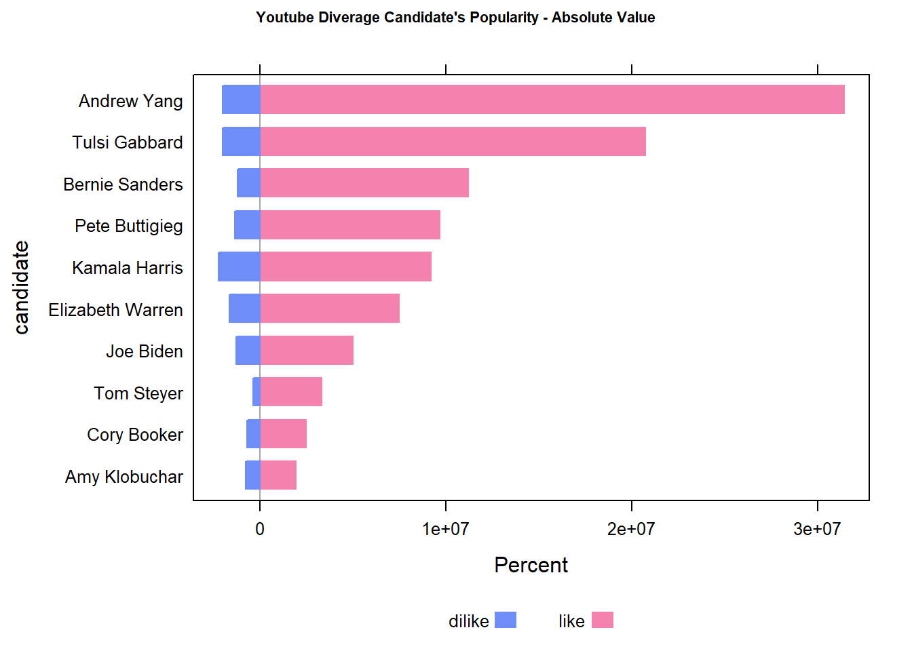
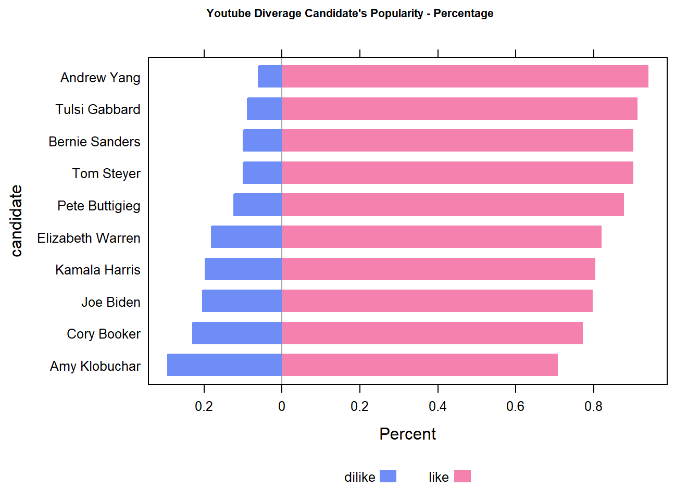
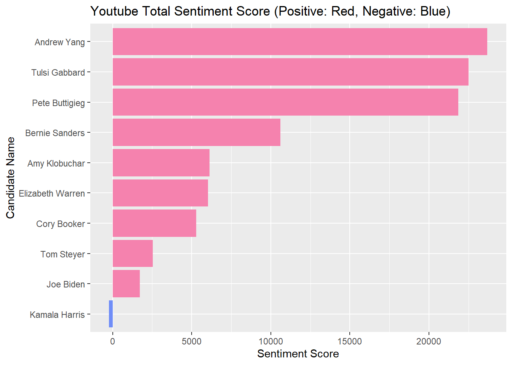
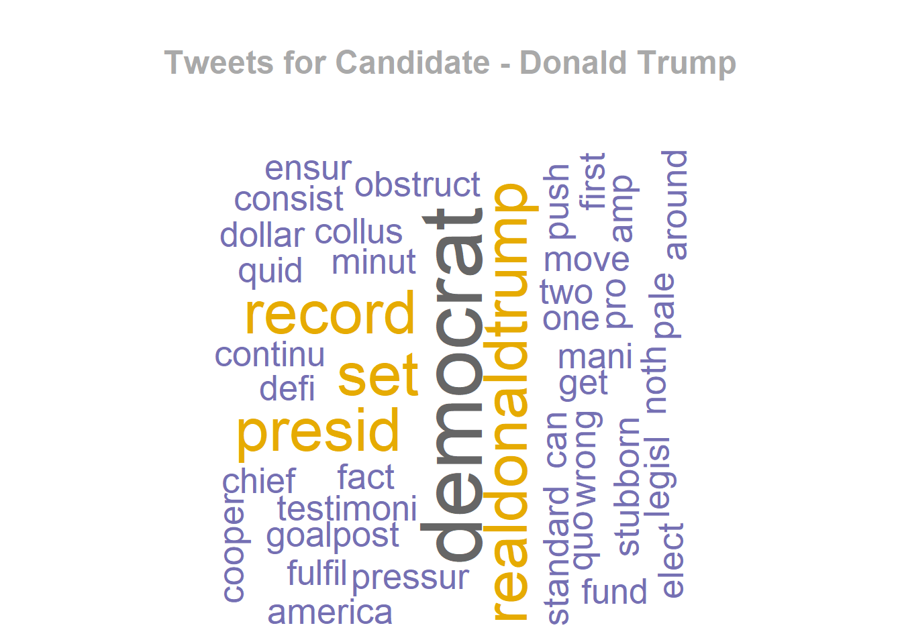
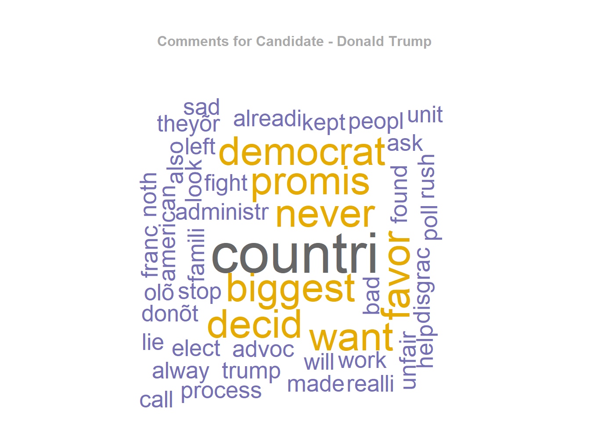

Chapter 5 Results
5.1 Youtube
5.1.1 Initial Investigation
Here is the result for total views per candiate online: 
Here is the result for views density per candidate per state:

From the series of plots using choropleth maps, we can compare: a) In each state, which candidate has more popularity online, in terms of views. b) For each candidate, in which state he/she has more popularity online, in terms of views.
5.1.2 Topic Analysis
Here are word cloud plots for top topics in 2020 presidential election on Youtube:



5.1.3 Popularity Analysis
Here are the core plots for our study to show which candidate are actually more popular online, based on video viewers’ likes and dislikes aggragation:
 
Here are core plots for our study to show which candidate in which state are actually more popular online, based on video viewers’ likes and dislikes aggragation: 
5.1.5 Demographics

Credit:castfromclay.co.uk
5.2 Twitter
5.2.1 Tweet Analysis
Here are word cloud plots for top topics in 2020 presidential election on Twitter: (Bonus viz on “twitter president”)

- Here is one of the core plots for our study to show the total diverging sentiment score per candidate on Twitter: 
5.2.2 Demographics
Credit:castfromclay.co.uk
5.3 Facebook
5.3.1 Post Analysis
Here are word cloud for posts per candidate on Facebook:
- Here is one of the core plots for our study to show the total sentiment score per candidate on Facebook: 
5.3.2 Demographics

Credit:castfromclay.co.uk
(Please note: We have more demographics analysis in Chapter-6, as interactive components.)

5.1.4 Comment Analysis
Here are word cloud for comments per candidate on Youtube: